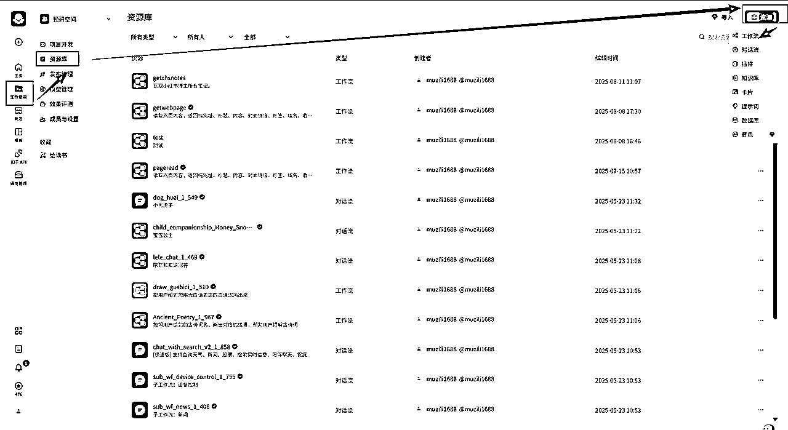
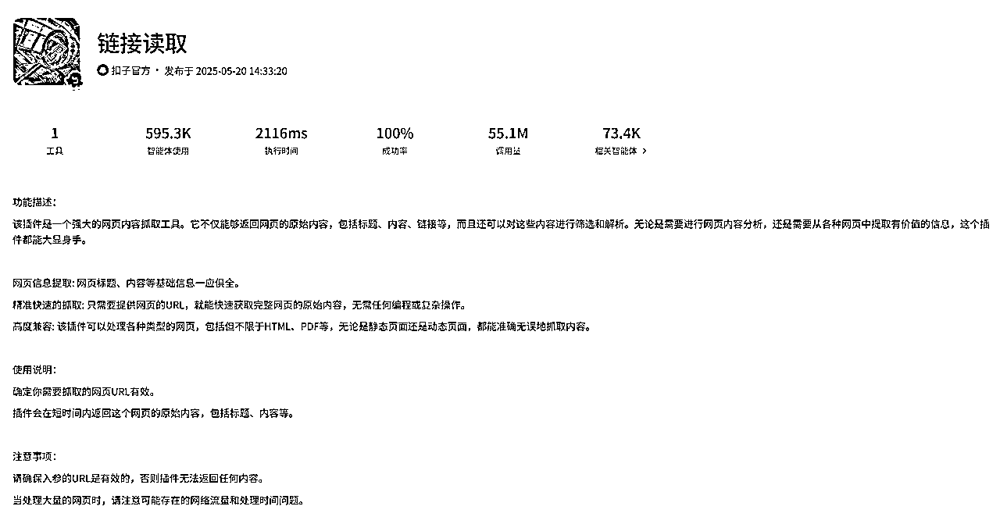

来源：https://lv13e2iljbk.feishu.cn/docx/R4IudxzGCo1GRGxBGV6cBQOfnkb
「coze+多维表格」的系列文章集合：
一键采集&创作&发布神器，半自动式躺赚，5分钟发布一篇高质量内容。
知道这些就能用coze赚大钱，爆料coze隐藏的玩法【精华】
「一键全网统一收藏」搭建教程【精华】
大家好，我是「求索的木子」，全网同名，一名产品人。
大家期待的iPhone、安卓、电脑上都可以「一键跨平台收藏」的教程现在来了！
圈友们多多点赞啊！
我自己用了真的是越用越上瘾！
▲苹果手机演示
▲安卓手机演示
本文目录，可点击跳转：
前情说明
产品介绍
搭建教程
我一直想快捷收藏圈友的精华文章，还想把小红书、抖音、B站等平台的内容统一收藏，一直想着做个方案出来满足自己的需求。
说实话，之前「扣子、快捷指令、飞书多维表格」就没怎么用过，但看了一些案例，感觉用这些可行。
所以花费了挺多买了各种扣子工作流、iPhone快捷指令，用来学习跟参考。
付费是最短的学习路径。
花了几周时间，从0开始边学边做，最终捣鼓出来了。
有圈友说我这个可以做个交付产品了，这个建议简直太好了。
所以我立马升级，做了个完整打包可直接交付的产品，在我的同名小红书上架了，已申请版权。
不想自己搭建的圈友，可以找鱼丸链接我，复制我的快捷指令改下参数后就能直接用的哈😊。
支持收藏包含但不限于以下平台：
微信公众号、飞书云文档、小红书、抖音、今日头条、B站、各类博客网站等。
支持iPhone、安卓手机、PC 三端使用，可同步收藏到同一个飞书多维表格内。
小红书、抖音、B站，可下载无水印高清图片、视频。
可一键秒速提取小红书、抖音、B站视频的文案，再也不用一字一句地手敲了。
提供丰富的数据看板，量化阅读行为（收藏量、阅读量、吸收进度、时间分布等），让自己从“信息收集者”向“知识构建者”转变，将外部信息真正内化为个人认知的一部分，帮助自己持续成长。
可记录文章全量文本内容（飞书云文档设置不可复制也可存下文章文本），基于该内容AI将自动总结，让用户快速了解文章主旨内容。
收藏内容太多，一时半会儿找不到收藏的叫什么，可以调出AI，输入有关的只言片语，AI就能找到。
👇下面链接有详细的视频演示，可跳转查看
收藏的整体流程为：
1、复制链接后执行快捷指令，快捷指令将链接及标注的一些信息通过扣子API给到工作流。
2、工作流抓取链接网页的主要信息，利用AI大模型提取视频文案、总结内容等，将所有信息整合成飞书多维表格API要求的格式传给表格。
这个AI大模型使用还是挺费钱的，后来我找了变通的方法，完美解决费用问题。
3、飞书多维表格自动生成记录，快捷指令反馈结果，点击跳转到飞书APP的表格。
1、飞书云盘里创建下面这样的表格。
2、手机下载飞书APP，在移动端设置列表的展示样式，方便在移动端查看。
扣子官网：https://www.coze.cn/home
1、在扣子里创建工作流，路径如下图

2、在工作流里拖入各种插件，搭建抓取网页内容的流程，并同步到飞书多维表格。
这个里面的坑太多了，一时半会儿我也表达不清楚，圈友如果有碰到困难可以加我问我。
把这些流程节点细节写全太难了，都是很简单但是操作繁琐的步骤，建议不会的圈友可以B站学下一些基本知识，上手就很轻松了，最精华的永远都是思路。
总体流程是这样的：
输入链接等参数→插件抓取链接网页的主要内容→同步到飞书多维表格。
里面用到的最主要插件有：

3、发布工作流，了解扣子API内容，学习怎么对接，准备好一些必备的参数，方便之后可以顺利通过API执行工作流。
调用一次API需要消耗开发者一些费用，如果做成产品卖的话，开发者自己要替客户承担下这笔费用。
建议大家多用用AI，比如豆包，把需求给他，他能指导你怎么搭建快捷指令，我全程依靠AI搭建出来的，具体哪个组件有什么用其实我都不怎么弄得明白。
1、画流程图，梳理清楚指令的整个逻辑。
2、按照流程图让AI指导你一步一步编写指令。
3、测试指令是否有效，检查能否顺利上传扣子工作流，并同步到飞书多维表格。
这个过程太难受了，每个分支流程都要创造数据去测，很烦！
安卓手机比较特殊，没有现成的快捷指令，但是可以用MacroDroid来替代，这个app可以实现自动化。
1、去微信里搜索最新的破解版，下载安装。
2、按照流程图让AI指导你一步一步编写指令。
3、测试指令是否有效，检查能否顺利上传扣子工作流，并同步到飞书多维表格。
本着能白嫖就白嫖的原则，自然就选择了用扣子的应用来实现PC端的收藏，服务器、域名这些全都省了。
创建应用难度还是很大的，涉及到了ui、工作流、页面布局、Div层显隐逻辑、数据库等，要不是自己有强迫症，要满足3端使用，这个PC端我就不做了。
应用地址：https://www.coze.cn/s/lDcdBC8ynmc/
1、扣子创建应用，创建路径见下图。
2、搭建应用页面，拖现成的组件到页面里，然后美化下。
3、搭建数据库，存储用户的固定参数，如多维表格链接等，这样用户第一次维护数据后，之后再用就可以直接调用了。
4、搭建页面数据存储、操作交互需要的工作流，新增编辑删除刷新，每一个逻辑都要匹配对应的工作流才能让应用正常运转。
5、页面交互逻辑跟工作流绑定，完善每一步交互操作反馈。
6、测试每一个逻辑，确保所有逻辑、交互反馈都正确。
以上就是所有的教程了，可以先学习下相关的扣子、快捷指令、多维表格知识，再按照我的思路搭建。
如果嫌麻烦可以联系我，到我小红书购买现成的。
感谢圈友们的支持，多多点赞哈😊👍